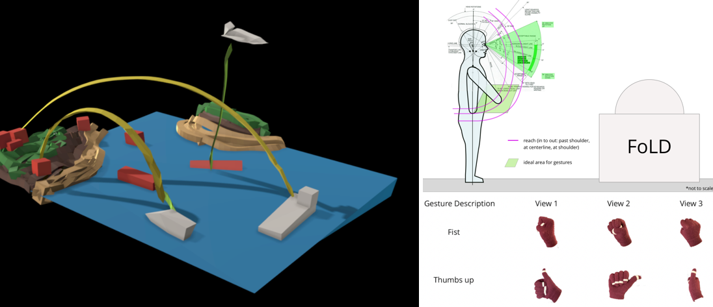

Ryan Biette
I love data and design. I am a researcher, a designer, and a human.
I design solutions that make positive and tangible impacts in people's everyday lives. I am particularly interested in the intersection of design and business.
I have my masters of science in Human Factors Engineering from Tufts University's School of Engineering and a minor in Entrepreneurial Studies from the Tufts' Gordon Institute.
Portfolio
Augmented Reality for Wayfinding
Gestural Holographic User Interface

Virtual Reality for Chronic Pain Treatment
The SmartCane
-
This Website!
Using bootstrap and my web programming skills, I designed this responsive website, wrote the code, and published it to the web. If you spot any errors or have suggestions, please let me know! I am always looking to improve.

For my capstone project in my graduate studies, I conducted independent research examining how different modalities of augmented reality affect user's ability to find items in a complex environment. I created prototypes in three modalities: visual, tactile, and auditory. After recruiting users, I conducted usability testing within a grocery store to compare the different methods. Click here for more information on the project
I led research for a gestural user interface that was displayed through a hologram as part of a government grant. This system was to be used as a situational awareness and planning tool for trained personel.Click here for more information on the project

For my capstone project in my undergraduate studies, I worked with a group of two computer science students and another human factors student. We sought to build a virtual reality research tool for our project sponsor, an occupational therapy researcher. Our goal was to enhance the traditional method of graded motor imagery therapy by making the therapy more immersive and believable. Chronic pain, specifically complex regional pain syndrome (CRPS), is characterized by dibilitating pain in limbs and often is accompanied by depression and anxiety. We hope that our solution can be used to advance the field and improve therapy methods for those struggling with CRPS. Click here for more information on the project

My grandmother has Alzheimer's disease and is losing her mobility. Over one Thanksgiving weekend, it became clear that finding my grandmother's cane was a large issue in her life and in my family's life. I took it upon myself to pitch this problem to my design and engineering club, MAKE. Over the course of the semester, we created a radio-controlled device that allows my grandparents to locate my grandmother's cane. This saves an average of thirty minutes per day and helps foster my grandmother's independence --something Alzheimer's takes away. Click here for a project summary
Other Projects
Experience
User Experience Research Intern
Enterprise Cyber Security Software Company
Junior User Experience Researcher and Designer
Promoted from User Experience and Human Factors Engineering Intern
MIT-backed startup creating device-based therapies for neurodegenerative diseases
Crew Lead
Adventure Food Company (Part time)
Monitoring/Data Analyst Intern
Solar Energy Installation and Maintenance
Engineering Intern
Agricultural Technology Start-up
Education
Tufts University School of Engineering
NOD: Notation of Professional Development, FAST TRAC Scholar
Tufts University School of Engineering
Middlebury Union High School
Skills
- Applied Data Science
- Product Design
- Management of Innovation
- Lean Six Sigma
- Engineering Management
- Analytical Methods of Human Factors Engineering
- Human Factors Product Design
- User Interface Design
- Human Machine System Design
- Advanced Statistics for Human Factors Engineers
- Industrial Design
- Human Computer Interaction
- Advanced Engineering Psychology
- Computer Aided Design
- Assistive Technology
- Web Programming
- Data Structures
- Materials Science
- Environmental Economics
Blog
I add to my blog periodically. Topics are mostly centered around human factors engineering and UX. I hope you enjoy!